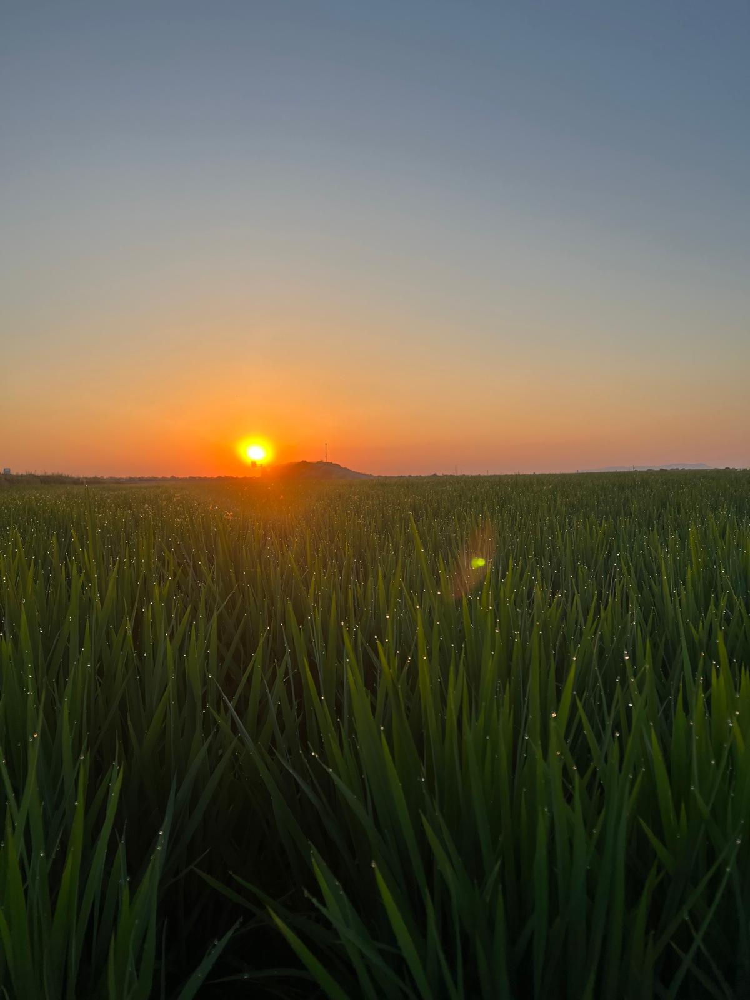
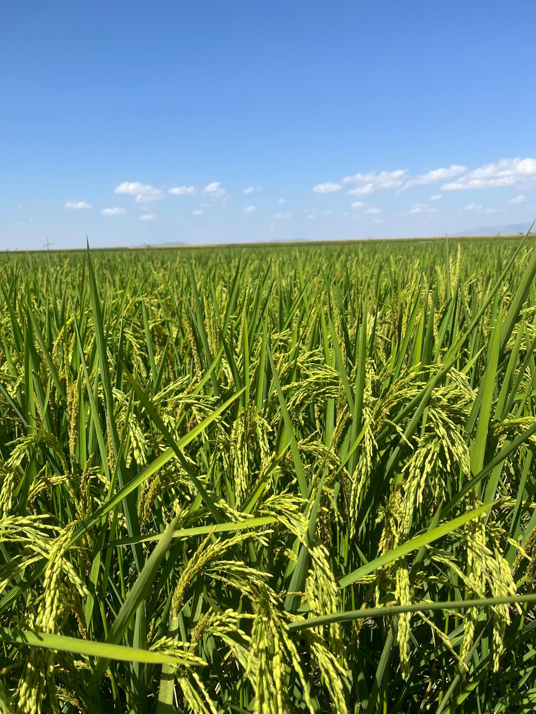

Importancia del Arroz en la Región
El arroz es un cultivo clave en Extremadura, con miles de hectáreas dedicadas a su producción. Gracias a la abundancia de agua y al clima adecuado, la región produce un arroz de alta calidad.
Siembra del arroz en Mayo:

Campo de arroz en plena floración:
 Este cultivo ha visto reducida su producción en los últimos años debido a la sequía y a tener menos margen de beneficios.
Este cultivo tiene que estar siempre en agua, desde que nace hasta que se cosecha por lo que las sequías de los últimos 4 años le han afectado, dejando de plantarse tanto. Este año volvió a mejorar.
Variedades de Arroz que sembramos
| Producto | Hectáreas cultivadas | Producción anual (Toneladas) |
|---|---|---|
| Arroz Largo | 30 | 300 |
| Arroz Redondo | 10 | 80 |
| Arroz Bomba | 10 | 56 |
Otro de los motivos de la reducción del total de hectáreas sembradas son la cantidad de malas hiervas que hay en el y la dificultad para hacerlas frente
La retirada del mercado de los principales fitosanitarios utilizados en este cultivo y la dificultad de si retirada a mano de las malas hiervas han hecho que se reduzca su producción también.
Contacto
Si deseas más información sobre el cultivo del arroz en Extremadura, rellena el siguiente formulario.